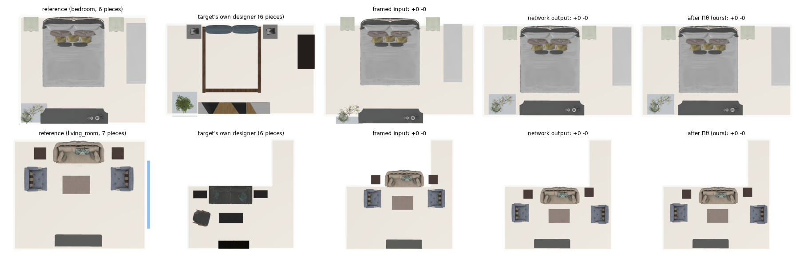
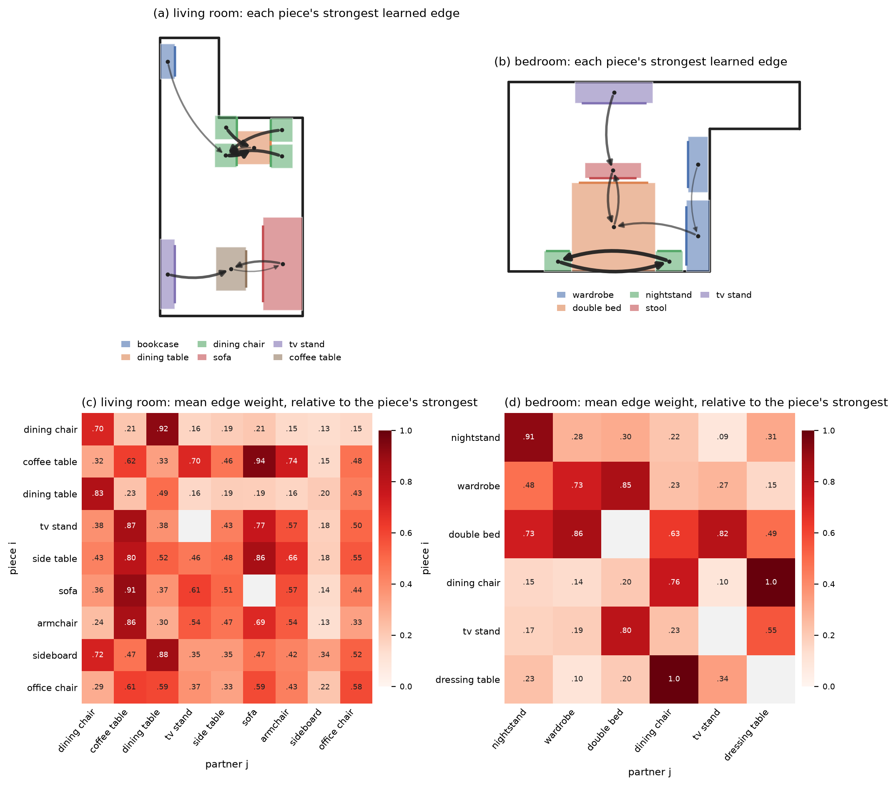
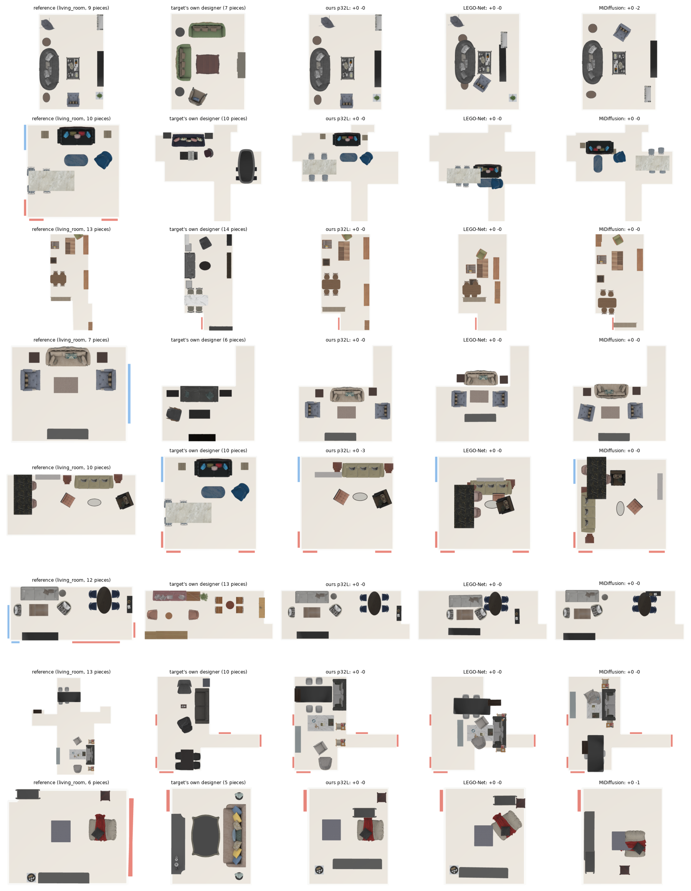
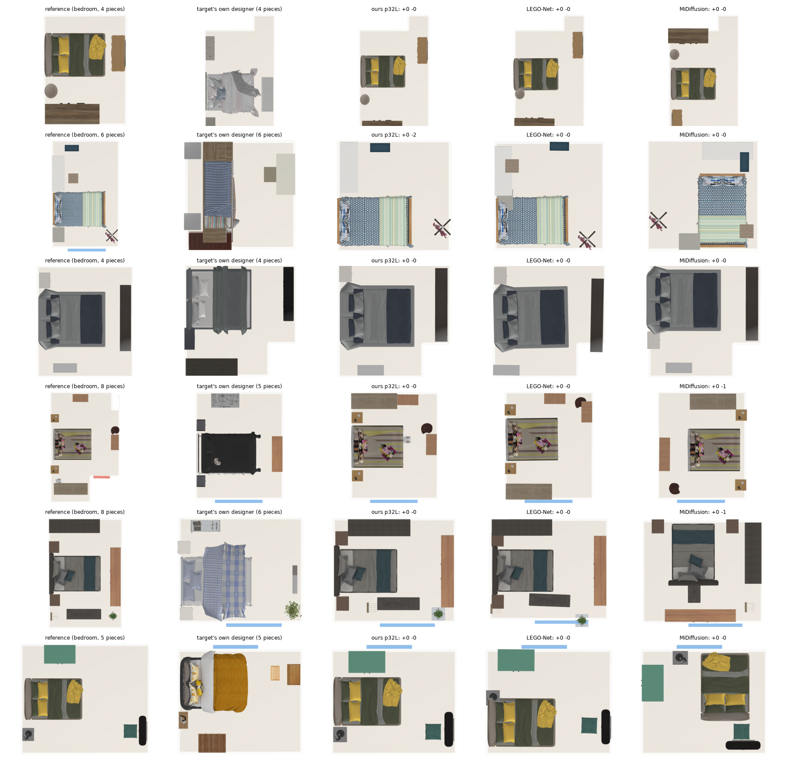
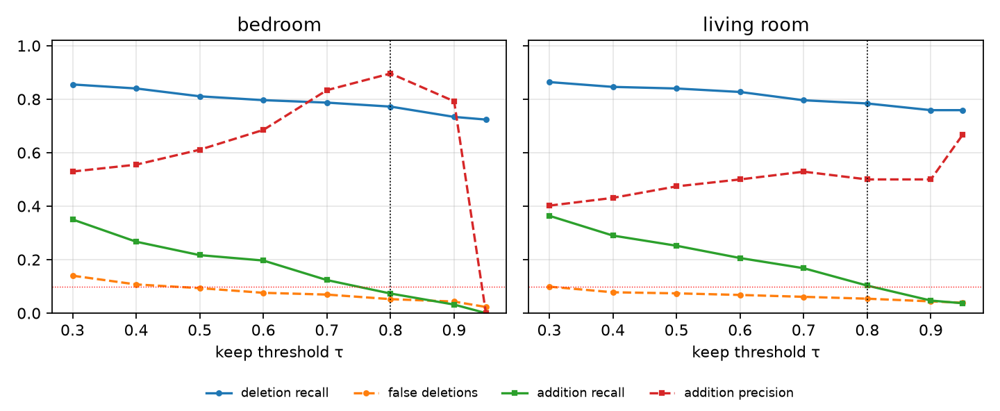
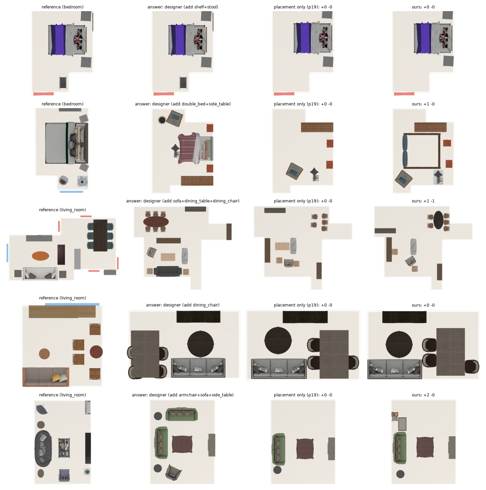
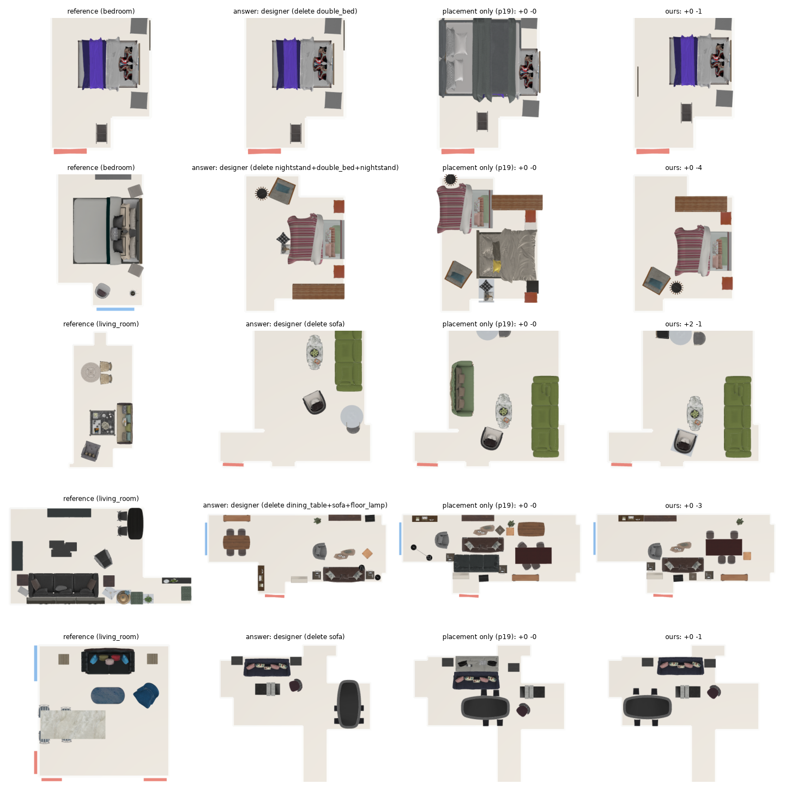
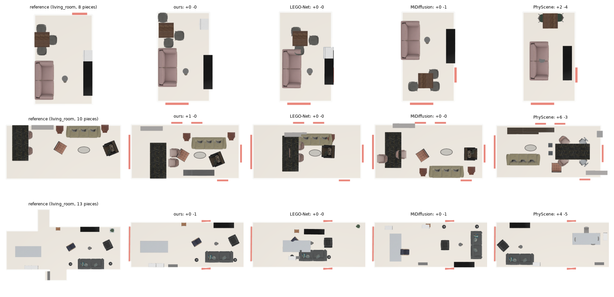

When furnishing a living space, occupants frequently seek to transfer a proven interior arrangement from a reference home into a new environment — retaining functional groupings such as the bed framed by its nightstands, or a living-room cluster where the sofa faces the media console across a coffee table. However, realistic target rooms rarely share the same spatial configuration; they exhibit divergent dimensions, non-congruent polygonal floor outlines, and mismatched door and window placements (Fig. 1). An expert interior designer performing this transfer does not generate an arrangement from scratch. Instead, they execute reference-to-room arrangement transfer: identifying the groupings to preserve, pruning secondary items that exceed the room's capacity, introducing functional additions when the room expands, and adjusting continuous poses so that functional intent, wall orientations, and circulation paths remain coherent. Formally, given a furnished reference room \(A\) and an empty polygonal target room \(B\), the objective is to synthesize a feasible layout in \(B\) that transfers the relational design intent of \(A\) — with \(A\)'s own furniture — while complying with architectural and physical feasibility.
Solving this retargeting problem introduces three challenges:
Existing indoor layout synthesizers [8] [9] [10] [7] [6] sample plausible scenes conditioned on floor polygons, object lists or text, but discard the reference's spatial arrangement; MiDiffusion [6] accepts an object list but not its continuous spatial groupings. Rearrangement models such as LEGO-Net [1] regularize disordered scenes toward the arrangements of their training corpus rather than transferring intent across non-isomorphic floor plans, and without the room's walls as constraints they leave pieces outside the room: on our real pairs, only 0.08 / 0.36 of its bedrooms / living rooms keep every piece inside. Kim et al. [2] retarget an arrangement with the target's own inventory and rule-based groups. Classical layout optimization methods [11] [12] optimize hand-crafted energy terms without learning from designers which items to prune, add, or anchor.
To overcome these limitations, we present PlaceNet, a placement transformer that learns relational design transfer from designers' rooms while enforcing physical feasibility by a constrained projection (Fig. 2). It is trained on 111,877 self-supervised rows built from real 3D-FRONT rooms [13]: a room's own arrangement carried into another outline and framed back, with the room as designed as the answer, so that no cross-room answer is needed. One network places every reference piece in the target, learns a relation graph over the pieces (Fig. 3), and decides the inventory edits; the edits are learned from pieces taken out of and put into real rooms.
We establish a division of labour between learning and geometric optimization: the network learns the subjective design decisions (where each piece goes, which pieces belong together and how tightly, what to prune and what to add), while the physical constraints are resolved by a mesh-level augmented Lagrangian projection \(\Pi_\theta\), whose only pair term is weighted by the learned graph. Table 1 lists which decisions are learned and which are fixed geometric procedures.
Our main contributions are:
Generative indoor scene synthesis. Indoor scene synthesis has progressed from autoregressive transformers [8] [9] and denoising diffusion models [10] to conditioning on text [16] and language or vision-language guidance [17] [18]. To reduce physical implausibility, PhyScene [7] adds collision and reachability guidance during diffusion sampling. MiDiffusion [6] combines discrete category selection with continuous bounding-box diffusion and supports partial completion and pre-specified object sets. These methods synthesize a scene conditioned on an empty floor polygon, a category list or a semantic graph; a reference room enters at most as such a list, so its continuous arrangement, functional groupings and wall alignments are not transferred. PlaceNet transfers the reference's own pieces and their relations across non-isomorphic floor plans.
Indoor rearrangement, retargeting and layout optimization. Scene rearrangement restructures disorganized assets into coherent configurations. LEGO-Net [1] learns to iteratively denoise messy scenes toward the arrangements of its training corpus; we take its piece tokens. It keeps a fixed inventory, does not receive the room's walls as constraints, and moves pieces toward global data priors rather than preserving the relations of a source scene; transplanted into non-congruent rooms, it leaves pieces across walls and in each other (§5.2). Kim et al. [2] transfer an arrangement to a new room with the target's own inventory, rule-based groups and a correction step; their boundary point tokens and their metrics (CF, IB, iRecall) are ours. Classical layout methods optimize interior-design guidelines by stochastic search or energy minimization [11] [12] [19]. They can enforce non-overlap, but an energy has no notion of which secondary pieces a designer gives up when a room shrinks, what complementary pieces they add, or which pieces a designer holds together.
Relational scene graphs and set adaptation. Relational layout pipelines often plan a scene graph over categorical predicates (e.g., surrounding, against-wall) before instantiating boxes [20] [21] [22]. Categorical graphs are brittle under continuous transformations, and their predicates are chosen by hand. Graphormer [23] puts continuous pair descriptors into attention as biases; PlaceNet goes one step further and learns the graph itself, as the uncertainty of each pair's relative pose [3] [24]. On the discrete side, adapting an inventory to the room connects to set-based architectures [25] [26], masked modelling [27] and set prediction with learned queries and Hungarian matching [4] [28].
Generative transport and constrained feasibility. Flow matching [29] and rectified flow [30] regress velocity fields along straight paths between two distributions; the previous version of this work transported the framed reference to the designer's layout with one. PlaceNet regresses the placement directly from the framed reference, as a mixture density [31] over offsets and a class over turns, which makes the edit and relation heads part of one forward pass. A generator can penalize collisions with soft losses in training, but it meets non-convex boundary conditions only up to its regression error. We therefore decouple physical feasibility from learning: non-penetration, containment and door clearance are enforced by a mesh-level augmented Lagrangian projection \(\Pi_\theta\) [5].
PlaceNet treats reference-to-room arrangement transfer as one regression from the framed reference to the designer's layout, with a learned relation graph and learned inventory edits, followed by a constrained feasibility projection (Fig. 2). Rather than relying on end-to-end regression to satisfy non-convex boundary conditions, we divide the labour: one transformer learns placement, relations and edits, and physical validity is enforced by \(\Pi_\theta\) (Table 1).
Problem definition. A furnished reference room \(A=\{(c_i,s_i,p_i,\theta_i,k_i)\}_{i=1}^N\) comprises \(N\) pieces, where \(c_i\) is the category, \(s_i\in\mathbb R^3_{>0}\) the bounding-box size, \(p_i\in\mathbb R^2\) the floor position, \(\theta_i\in[-\pi,\pi)\) the yaw and \(k_i\) a 3D-FUTURE asset [32]. The target room \(B\) is a polygon \(P_B\) with its door and window segments; each door has a clearance box in \(\mathcal D\). The system produces a layout of \(A\)'s pieces in \(P_B\), some of them possibly removed and pieces possibly added (\(N'\neq N\) in general), that preserves the functional groupings, orientations and wall relations of \(A\) under physical constraints. A kept piece keeps its own asset.
Geometric framing. Rather than predicting poses from nothing, PlaceNet starts from an informative, geometry-aligned input: the reference's positions are carried into the target's frame by an area-matching similarity about the room centroids \(c_A, c_B\):
$$\tilde p_i=c_B+\sqrt{|B|/|A|}\,\big(p_i-c_A\big),\qquad \tilde s_i=s_i,\qquad \tilde\theta_i=\theta_i,\tag{1}$$so that the identity keeps the reference layout and the correction is small where the room changes little. Every head reads the framed reference.
Tokens. Each reference piece is one token, as in LEGO-Net [1]: a category embedding, its log size and elevation, Fourier features [33] of its framed position and its orientation, each embedded to 128 dimensions and projected to width 512. The target's boundary is 250 points sampled along its walls with their inward normals, plus one token per door or window, as Kim et al.'s boundary tokens [2]; 2 self-attention blocks encode them into the room memory.
Decoder and heads. 6 pre-norm transformer decoder blocks [34] (width 512, 8 heads) let the pieces attend to each other and cross-attend to the room memory. Per piece, the position is the framed position plus an offset, predicted as a mixture of 8 offsets with a winner-take-all regression and a classifier over the components [31], so that a piece that may belong at one wall or another is not averaged between them; the turn is a class among 36 bins plus an offset within the bin. A second pass reads the first pass's poses.
For every ordered pair \((i, j)\), a head on the two pieces' final tokens predicts the relative pose of \(j\) in \(i\)'s frame \(\mu_{ij}\) (offset and turn) and its standard deviation \(\sigma_{ij}\), trained by the Gaussian negative log-likelihood of the designer's relative pose \(r_{ij}\) [3], with the \(\beta\)-NLL weighting (\(\beta=0.5\)) [24] (\(\lfloor\cdot\rfloor\): no gradient). A pair the data places the same way every time gets a small \(\sigma\): the edge weight \(w_{ij}\) is the probability, under the learned \(\sigma_{ij}\), that the pair keeps its relative position within \(\delta = 10\) cm on both axes:
$$\begin{gathered}\mathcal L_\text{rel}=\sum_{i\neq j}\Big[\tfrac12\big\lVert(r_{ij}-\mu_{ij})/\sigma_{ij}\big\rVert^2+\textstyle\sum\log\sigma_{ij}\Big]\,\big\lfloor\sigma_{ij}^{2\beta}\big\rfloor,\qquad w_{ij}=\prod_{a\in\{x,y\}}\operatorname{erf}\!\Big(\frac{\delta}{\sigma_{ij,a}\sqrt2}\Big),\\ \mathcal L_\text{pair}=\sum_{i\neq j}\lfloor w_{ij}\rfloor\,\big\lVert \hat r_{ij}-r_{ij}\big\rVert^2,\end{gathered}\tag{2}$$The graph has no relation types and no threshold on distance or category. It is used twice: the training's relation term \(\mathcal L_\text{pair}\) covers every pair, each weighted by \(w_{ij}\) (earlier versions selected "dependents" by a 0.3 m / three-times-the-area rule), and the projection's pair term is weighted by it (Eq. 4; earlier versions used rigid groups of pieces within 0.3 m). Over the validation rooms (Fig. 3), a dining chair's strongest edge is to its dining table (mean weight relative to the chair's strongest 0.92, against 0.21 to the coffee table), a coffee table's to the sofa (0.94) and a TV stand's to the coffee table (0.87); the two nightstands of a bed hold each other most (0.91), and the double bed holds the wardrobe (0.86) and the nightstands (0.73).

Whether to edit is decided by an inventory branch that reads only the pieces' categories and sizes and the target room, never a position: two decoder blocks over a class token and one token per piece, cross-attending to the room memory, predict for each category of the inventory how many of its pieces are too many \(e_c\) (the votes of its pieces averaged) and, from the class token, for every category of the vocabulary how many are missing \(m_c\) (0 to 3 each). An earlier version decided deletions per piece from the placement tokens; it learned that a piece at an odd place is one to delete, and deleted 9.9% / 12.3% of the rooms' own pieces (bedroom / living room) on the add / delete set, because a piece without a partner in the reference starts at a random place just as an intruder does. Which piece and where come from the placement branch: of a category with \(k\) too many, the \(k\) pieces with the lowest keep logit go; an addition comes from 8 add queries that ride along with the pieces (DETR-style set prediction [4], Hungarian matching [28]), each predicting whether it adds a piece, its category, size and pose:
$$\begin{gathered}\mathcal L_\text{inv}=-\sum_{c\in A}\log p\big(e_c=e_c^\ast\big)-\sum_{c}\log p\big(m_c=m_c^\ast\big),\qquad \text{delete}\ k\ \text{of}\ c\iff P(e_c\ge k)\ge\tau,\\ \text{the}\ k\ \text{pieces of}\ c\ \text{with the lowest keep logit go};\qquad \text{add}\ \textstyle\big[\sum_q p^\text{ex}_q\big]\ \text{queries, most probable first},\end{gathered}\tag{3}$$A self-check then re-reads the inventory with the additions through the inventory branch and withdraws an addition it would delete. The pieces never attend to the add queries, so without edits the placement is unchanged. Edits are decided on the first pass. Deletions are taken at \(\tau = 0.8\), chosen on validation edits (Fig. 6); the addition decoding was chosen on a selection set of other validation references (Table 13). The self-check is the exception: it was added after the evaluation pairs' bedrooms showed a third nightstand added next to two, and on the selection set it does not help (Table 13), so Table 12's additions are not free of that one look at the evaluation pairs.
The network's output shows small interpenetrations and pieces through walls, because a network meets non-convex boundary conditions only up to its error. \(\Pi_\theta\) maps the predicted positions \(\hat p\) onto the non-convex feasible set, keeping each pair's predicted relative position in proportion to its learned edge:
$$\begin{aligned}\Pi_\theta(\hat x)=\arg\min_{p}\ &\sum_i\lVert p_i-\hat p_i\rVert^2+\sum_{i\neq j}w_{ij}\,\big\lVert (p_j-p_i)-(\hat p_j-\hat p_i)\big\rVert^2\\ \text{s.t.}\ &\mathrm{pen}\big(M_i^h,M_j^h\big)\le0\ \ \forall h,\qquad \mathrm{pen}\big(F_i,F_j\big)\le0,\\ &\text{corners}(F_i)\subset P_B,\qquad \mathrm{pen}(F_i,b)\le0\ \ (b\in\mathcal D,\ z_i<1\,\text{m}),\end{aligned}\tag{4}$$The solver runs Adam [35] (100 steps per round, at most 25 rounds, \(\rho_0=10\) doubling; feasible at a residual below 2 cm), on one CPU thread per room. Before the solve, a kept piece whose reference angle is within 6° of square to its wall is squared to it, and a piece that stood against a wall in the reference is held within its category's 90th-percentile real wall gap. Two clearances are pursued as in v0.6: storage opened from the front keeps a person's width (0.6 m) clear in front of it, and a lone piece left nearer a wall than a person's passage is put against that wall when the layout stays feasible and walkable. The pair term has no groups, anchors or category rules.
Table 1. Division of labour in the inference path: what is learned, what is a fixed geometric procedure, and where every constant comes from (read from the code).
| decision | made by | constants and their source |
|---|---|---|
| where each piece goes | learned: pose heads (mixture offset, turn class), two passes | 8 offsets, 36 turn bins |
| which pieces belong together, how tightly | learned: relation head, \(w_{ij}\) (Eq. 2) | \(\delta = 0.1\) m (the tolerance of an edge) |
| how many of a category are too many / missing | learned: inventory branch (Eq. 3) | \(\tau = 0.8\), chosen on validation edits (Fig. 6) |
| which piece goes; what is added and where | learned: keep logit, add queries, self-check (Eq. 3) | count decoding chosen on the selection set (Table 13) |
| no interpenetration | \(\Pi_\theta\): mesh cross-sections (Eq. 4) | 17 heights 0.05–2.45 m; zero penetration |
| top-view overlap | \(\Pi_\theta\) | none allowed (footprints) |
| inside the room; door clearance | \(\Pi_\theta\) | door box of the door-blocked metric (door width ≥ 0.8 m, 0.9 m deep) |
| holding the learned relations | \(\Pi_\theta\)'s pair term | weights = learned \(w_{ij}\); no groups |
| orientation to the wall | reference angle squared | 6°: emptiest 1° bin of real deviations from square |
| wall contact | reference wall contacts held | 90th percentile of real wall gaps per category |
| clearances | storage front kept clear; a gap no person can use closed | a person's passage, 0.6 m |
Base corpus. We use 3D-FRONT [13] scenes with 3D-FUTURE assets [32], with ceiling and pendant lamps removed. The corpus is split by house into training, validation and test, and mislabeled categories are corrected (footstools labelled double bed, bookcases labelled wardrobe).
Rows without cross-room answers. Real room pairs have no answer, so the 111,877 training rows are self-supervised. The answer is a real room \(S\) as designed; the reference is \(S\)'s own arrangement carried into a virtual room — \(S\)'s outline scaled (0.7–1.3), stretched along its axes (0.75–1.4) or cut to an L, T, trapezoid or pentagon, or another real room's outline — by the framing of Eq. 1, pieces left outside moved to the nearest place inside; the network then frames that reference back into \(S\). What it has to undo is the structured error of retargeting — groups shifted together, pieces off the walls they belong to, pieces in a cut — with the designer's arrangement as the known answer. Per batch, 75 % of the rows are such transfers (half of them into another real room's outline) and the rest the room itself with LEGO-Net's online perturbation of the reference [1]; the reference poses are further corrupted as real pairs are (a piece takes another piece's pose, is turned, or starts at a random place), the rows are rotated jointly (half of them by a uniform angle) and mirrored with probability 0.5.
Online edits. To teach adding, one to three of a room's pieces are taken out and the room as designed is the answer (as masked modelling [27]); to teach deleting, one to three pieces that make the inventory too much — a duplicate fewer than 5 % of the training rooms of the type hold, or a piece that takes the furniture's floor share above the type's 95th percentile — are put in at random places, and deleting them is the answer. With probability 0.5 a room's own piece of the intruder's category starts at a random place too (as the kim75 pieces without a partner do), so that where a piece starts tells nothing and only the count does; the deletion labels are counts per category, and deleting either of the two is right.
The objective sums the placement, physics, relation, wall and edit terms:
$$\mathcal L=\mathcal L_\text{pose}+\lambda_\text{phys}\mathcal L_\text{phys}+\mathcal L_\text{rel}+\lambda_\text{pair}\mathcal L_\text{pair}+\lambda_\text{wall}\mathcal L_\text{wall}+\mathcal L_\text{edit}+\mathcal L_\text{inv}+\mathcal L_\text{LwF},\tag{5}$$where \(\mathcal L_\text{pose}\) is the mixture's winner-take-all offset regression and classifier and the turn's class and offset loss, \(\mathcal L_\text{phys}\) penalizes overlap and leaving the room beyond the designer's own answer (with the designers' overlaps allowed), \(\mathcal L_\text{wall}\) the answer's wall contacts lost, \(\mathcal L_\text{edit}\) the keep logits and the Hungarian-matched queries [4], and \(\mathcal L_\text{LwF}\) distils the placement on the unedited rows to the placement-only model [14] (\(\lambda_\text{phys}=30.0\), \(\lambda_\text{pair}=10.0\), \(\lambda_\text{wall}=5.0\), the others 1). One model per room type is trained with AdamW [36] (weight decay 0.01, \(\beta_2 = 0.95\), gradient clipping at 1), a linear warm-up and cosine decay, in bf16 mixed precision, in three stages (Appendix A, Table 20).
Benchmarks. All evaluations use frozen sets of real rooms, stored with SHA-256 manifests (Table 21):
Baselines. LEGO-Net [1] denoises from the framed reference with the reference's pieces; MiDiffusion [6] reads the reference's categories and the floor plan; PhyScene [7] (living rooms only, its released model) reads the floor plan. The framed reference itself (Eq. 1, no model) is the identity baseline. Metrics. CF: no two floor footprints overlap by more than 2 % of the smaller; CFk: the designers' overlaps allowed; IB: every piece inside; iRecall: the reference's relations recalled; door: door clearance boxes blocked (Kim et al.'s metrics [2]). Sign tests count the rooms where one method is better (ties dropped; two-sided exact binomial), and paired bootstrap intervals resample the rooms [15].
Table 2. Real pairs with the reference's furniture.
| method | bedroom: CF ↑ | bedroom: CFk ↑ | bedroom: IB ↑ | bedroom: iRecall ↑ | living room: CF ↑ | living room: CFk ↑ | living room: IB ↑ | living room: iRecall ↑ | living room: door blocked ↓ |
|---|---|---|---|---|---|---|---|---|---|
| Ours | 0.96 | 0.96 | 0.96 | 0.895 | 0.92 | 0.96 | 0.88 | 0.843 | 0.024 |
| Framed reference (no model) | 0.44 | 0.96 | 0.12 | 0.929 | 0.32 | 0.80 | 0.06 | 0.928 | 0.322 |
| LEGO-Net | 0.20 | 0.76 | 0.08 | 0.876 | 0.02 | 0.08 | 0.36 | 0.820 | 0.191 |
| MiDiffusion | 0.32 | 0.88 | 0.28 | 0.740 | 0.10 | 0.38 | 0.22 | 0.642 | 0.250 |
| PhyScene | — | — | — | — | 0.00 | 0.28 | 0.36 | 0.650 | 0.361 |
Table 3. Sign tests on Table 2 (rooms won/lost), pooled and per room type.
| ours vs. | rooms | CF ↑ | CFk ↑ | IB ↑ | iRecall ↑ | door blocked ↓ |
|---|---|---|---|---|---|---|
| LEGO-Net | all | 64/0, p<0.001 | 49/0, p<0.001 | 49/1, p<0.001 | 43/23, p=0.019 | 9/1, p=0.021 |
| LEGO-Net | bedroom | 19/0, p<0.001 | 5/0, p=0.062 | 22/0, p<0.001 | 12/5, p=0.143 | 0/0, — |
| LEGO-Net | living room | 45/0, p<0.001 | 44/0, p<0.001 | 27/1, p<0.001 | 31/18, p=0.085 | 9/1, p=0.021 |
| MiDiffusion | all | 57/0, p<0.001 | 31/0, p<0.001 | 51/1, p<0.001 | 64/8, p<0.001 | 12/1, p=0.003 |
| MiDiffusion | bedroom | 16/0, p<0.001 | 2/0, p=0.500 | 18/1, p<0.001 | 19/3, p<0.001 | 0/0, — |
| MiDiffusion | living room | 41/0, p<0.001 | 29/0, p<0.001 | 33/0, p<0.001 | 45/5, p<0.001 | 12/1, p=0.003 |
| PhyScene | all | 46/0, p<0.001 | 35/1, p<0.001 | 27/1, p<0.001 | 44/6, p<0.001 | 14/0, p<0.001 |
| PhyScene | living room | 46/0, p<0.001 | 35/1, p<0.001 | 27/1, p<0.001 | 44/6, p<0.001 | 14/0, p<0.001 |
Table 4. Paired differences on Table 2, ours minus each method: the mean over the rooms and its 95 % bootstrap interval (10,000 resamples).
| ours − | rooms | CF ↑ | IB ↑ | iRecall ↑ |
|---|---|---|---|---|
| LEGO-Net | bedroom | +0.760 [+0.600, +0.920] | +0.880 [+0.760, +1.000] | +0.019 [-0.001, +0.038] |
| LEGO-Net | living room | +0.900 [+0.820, +0.980] | +0.520 [+0.380, +0.660] | +0.023 [-0.011, +0.057] |
| MiDiffusion | bedroom | +0.640 [+0.440, +0.800] | +0.680 [+0.440, +0.880] | +0.155 [+0.094, +0.219] |
| MiDiffusion | living room | +0.820 [+0.720, +0.920] | +0.660 [+0.520, +0.780] | +0.201 [+0.156, +0.248] |
| PhyScene | living room | +0.920 [+0.840, +0.980] | +0.520 [+0.360, +0.660] | +0.192 [+0.148, +0.237] |
Collision-free rooms: 0.96 of the bedrooms and 0.92 of the living rooms, against 57/0, p<0.001 for MiDiffusion and 64/0, p<0.001 for LEGO-Net. LEGO-Net moves the reference's pieces and keeps their relations nearly as well; its layouts overlap and leave the room. MiDiffusion generates its own arrangement from the categories and drops pieces. The framed reference itself keeps the relations best (iRecall 0.929 / 0.928) but is collision-free in 0.44 / 0.32 of the rooms and inside the room in 0.12 / 0.06: the task is to give up as little of its iRecall as possible while making the room feasible.
One reproducible path. Every number of our method comes from one run on one machine (PlaceNet on a GPU, \(\Pi_\theta\) on CPU threads); two runs of it are bit-identical. The network's floating-point results differ slightly between a GPU and a CPU, and between two CPUs, and the discrete decisions (a mixture component, a turn class, an edit) and the non-convex projection can amplify the difference: an earlier run of the same model on a CPU machine moved pieces by up to a metre in some rooms. Its metrics do not differ significantly from the reported run (CF 3/1, p=0.625, iRecall 15/17, p=0.860 on the validation pairs), so the comparisons do not depend on the machine.


Kim et al.'s protocol. With the target's own inventory (Table 5), PlaceNet wins every metric pooled over the room types but the door clearance, where the difference is significant only against PhyScene (11/1, p=0.006; LEGO-Net 8/3, p=0.227, MiDiffusion 10/3, p=0.092): 27 of the pairs have a door clearance box at all, and in most of them neither method blocks it. Since this protocol needs no edits, the inventory branch should keep everything: it keeps 99.3% of the bedroom pieces and 97.8% of the living-room pieces.
Table 5. The target's own inventory (Kim et al.'s protocol). The designer is the target room as designed.
| bedroom | CF ↑ | CFk ↑ | IB ↑ | iRecall ↑ | rel. kept ↑ | door ↓ |
|---|---|---|---|---|---|---|
| Designer (target's own) | 0.40 | 0.88 | 0.48 | 0.843 | 0.326 | 0.000 |
| Ours | 0.84 | 0.92 | 0.80 | 0.901 | 0.773 | 0.000 |
| LEGO-Net | 0.12 | 0.52 | 0.00 | 0.716 | 0.129 | 0.500 |
| MiDiffusion | 0.36 | 0.80 | 0.36 | 0.747 | 0.237 | 0.000 |
| living room | CF ↑ | CFk ↑ | IB ↑ | iRecall ↑ | rel. kept ↑ | door ↓ |
|---|---|---|---|---|---|---|
| Designer (target's own) | 0.30 | 0.86 | 0.40 | 0.743 | 0.316 | 0.126 |
| Ours | 0.80 | 1.00 | 0.88 | 0.829 | 0.545 | 0.100 |
| LEGO-Net | 0.00 | 0.12 | 0.46 | 0.662 | 0.157 | 0.125 |
| MiDiffusion | 0.14 | 0.48 | 0.28 | 0.663 | 0.219 | 0.289 |
| PhyScene | 0.00 | 0.24 | 0.40 | 0.634 | 0.206 | 0.341 |
Table 6. Sign tests on Table 5.
| ours vs. | rooms | CF ↑ | CFk ↑ | IB ↑ | iRecall ↑ | door ↓ |
|---|---|---|---|---|---|---|
| LEGO-Net | all | 58/0, p<0.001 | 55/1, p<0.001 | 43/2, p<0.001 | 67/4, p<0.001 | 8/3, p=0.227 |
| LEGO-Net | bedroom | 18/0, p<0.001 | 11/1, p=0.006 | 20/0, p<0.001 | 22/1, p<0.001 | 1/0, p=1.000 |
| LEGO-Net | living room | 40/0, p<0.001 | 44/0, p<0.001 | 23/2, p<0.001 | 45/3, p<0.001 | 7/3, p=0.344 |
| MiDiffusion | all | 46/1, p<0.001 | 30/1, p<0.001 | 43/2, p<0.001 | 60/11, p<0.001 | 10/3, p=0.092 |
| MiDiffusion | bedroom | 13/1, p=0.002 | 4/1, p=0.375 | 13/2, p=0.007 | 17/5, p=0.017 | 0/0, — |
| MiDiffusion | living room | 33/0, p<0.001 | 26/0, p<0.001 | 30/0, p<0.001 | 43/6, p<0.001 | 10/3, p=0.092 |
| PhyScene | all | 40/0, p<0.001 | 38/0, p<0.001 | 25/1, p<0.001 | 41/7, p<0.001 | 11/1, p=0.006 |
| PhyScene | living room | 40/0, p<0.001 | 38/0, p<0.001 | 25/1, p<0.001 | 41/7, p<0.001 | 11/1, p=0.006 |
The validation pairs above guided development (the self-check of §3.4 was added after looking at them). For final numbers, 75 pairs were built from the house-disjoint test split with the same rule (25 bedrooms, 50 living rooms), frozen, and run once with every method, including our model without the self-check.
Table 7. The held-out test pairs (kimtest75), the reference's furniture, outputs as each method publishes them.
| method | bedroom: CF ↑ | bedroom: CFk ↑ | bedroom: IB ↑ | bedroom: iRecall ↑ | living room: CF ↑ | living room: CFk ↑ | living room: IB ↑ | living room: iRecall ↑ | living room: door blocked ↓ |
|---|---|---|---|---|---|---|---|---|---|
| Ours | 0.76 | 1.00 | 0.68 | 0.920 | 0.86 | 0.94 | 0.78 | 0.847 | 0.164 |
| Ours without the self-check | 0.76 | 1.00 | 0.68 | 0.920 | 0.86 | 0.94 | 0.78 | 0.848 | 0.164 |
| Framed reference (no model) | 0.32 | 0.92 | 0.04 | 0.981 | 0.30 | 0.78 | 0.08 | 0.941 | 0.407 |
| LEGO-Net | 0.24 | 0.72 | 0.00 | 0.890 | 0.02 | 0.14 | 0.24 | 0.834 | 0.251 |
| MiDiffusion | 0.24 | 0.80 | 0.24 | 0.775 | 0.04 | 0.42 | 0.28 | 0.643 | 0.401 |
| PhyScene | — | — | — | — | 0.04 | 0.30 | 0.32 | 0.659 | 0.488 |
Table 8. Sign tests on Table 7.
| ours vs. | rooms | CF ↑ | CFk ↑ | IB ↑ | iRecall ↑ | door blocked ↓ |
|---|---|---|---|---|---|---|
| LEGO-Net | all | 56/1, p<0.001 | 47/0, p<0.001 | 44/0, p<0.001 | 38/27, p=0.215 | 15/5, p=0.041 |
| LEGO-Net | bedroom | 14/1, p<0.001 | 7/0, p=0.016 | 17/0, p<0.001 | 10/6, p=0.454 | 2/0, p=0.500 |
| LEGO-Net | living room | 42/0, p<0.001 | 40/0, p<0.001 | 27/0, p<0.001 | 28/21, p=0.392 | 13/5, p=0.096 |
| MiDiffusion | all | 56/2, p<0.001 | 32/1, p<0.001 | 40/4, p<0.001 | 65/4, p<0.001 | 20/4, p=0.002 |
| MiDiffusion | bedroom | 15/2, p=0.002 | 5/0, p=0.062 | 11/0, p<0.001 | 18/1, p<0.001 | 2/0, p=0.500 |
| MiDiffusion | living room | 41/0, p<0.001 | 27/1, p<0.001 | 29/4, p<0.001 | 47/3, p<0.001 | 18/4, p=0.004 |
| PhyScene | all | 42/1, p<0.001 | 33/1, p<0.001 | 24/1, p<0.001 | 43/5, p<0.001 | 19/3, p<0.001 |
| PhyScene | living room | 42/1, p<0.001 | 33/1, p<0.001 | 24/1, p<0.001 | 43/5, p<0.001 | 19/3, p<0.001 |
| framed | all | 42/3, p<0.001 | 11/1, p=0.006 | 51/0, p<0.001 | 7/55, p<0.001 | 18/2, p<0.001 |
| framed | bedroom | 12/1, p=0.003 | 2/0, p=0.500 | 16/0, p<0.001 | 2/13, p=0.007 | 1/0, p=1.000 |
| framed | living room | 30/2, p<0.001 | 9/1, p=0.021 | 35/0, p<0.001 | 5/42, p<0.001 | 17/2, p<0.001 |
The test pairs are harder than the validation pairs — their bedrooms have doors, and fewer of our bedrooms stay in bounds (0.68 against 0.96) — but the comparison holds: collision-free in 0.76 / 0.86 of the rooms against at most 0.24 for the baselines, fewer doors blocked, and more relations recalled than MiDiffusion (65/4, p<0.001) and PhyScene (43/5, p<0.001); against LEGO-Net the iRecall difference is not significant (38/27, p=0.215). The self-check, chosen on the validation pairs, changes nothing on the test pairs but the additions: with it 1.00 of the bedroom additions are plausible, without it 0.80.
The baselines publish their layouts without a feasibility step, while ours pass through \(\Pi_\theta\). To separate the network from the projection, every method's layout — ours before \(\Pi_\theta\), the baselines', and the framed reference — is passed through one and the same physics-only projection (mesh cross-sections and footprints without overlap, containment, door boxes; no pair term, no wall, square or clearance step; every piece at its own size, a reference piece with its own mesh; scripts/goat/proj_any.py).
Table 9. Every method through the same physics-only projection, validation (kim75) and test (kimtest75) pairs. des_err: median distance of the kept pieces to their partner in the target's own designer layout (m, lower is better).
| method | bedroom: CF ↑ | bedroom: CFk ↑ | bedroom: IB ↑ | bedroom: iRecall ↑ | bedroom: des_err ↓ | living room: CF ↑ | living room: CFk ↑ | living room: IB ↑ | living room: iRecall ↑ | living room: des_err ↓ | living room: door blocked ↓ |
|---|---|---|---|---|---|---|---|---|---|---|---|
| Ours (network) + projection | 0.92 | 0.96 | 0.92 | 0.896 | 1.443 | 0.94 | 0.96 | 0.92 | 0.846 | 2.148 | 0.008 |
| Framed reference + projection | 1.00 | 1.00 | 0.92 | 0.899 | 1.423 | 0.80 | 0.88 | 0.76 | 0.842 | 2.352 | 0.108 |
| LEGO-Net + projection | 0.96 | 1.00 | 0.84 | 0.864 | 1.450 | 0.92 | 0.92 | 0.94 | 0.771 | 2.109 | 0.000 |
| MiDiffusion + projection | 1.00 | 1.00 | 0.96 | 0.717 | 1.708 | 0.94 | 0.94 | 0.84 | 0.627 | 1.609 | 0.060 |
| PhyScene + projection | — | — | — | — | — | 0.86 | 0.92 | 0.82 | 0.638 | 2.045 | 0.152 |
| method | bedroom: CF ↑ | bedroom: CFk ↑ | bedroom: IB ↑ | bedroom: iRecall ↑ | bedroom: des_err ↓ | living room: CF ↑ | living room: CFk ↑ | living room: IB ↑ | living room: iRecall ↑ | living room: des_err ↓ | living room: door blocked ↓ |
|---|---|---|---|---|---|---|---|---|---|---|---|
| Ours (network) + projection, test | 0.92 | 1.00 | 0.76 | 0.899 | 1.087 | 0.86 | 0.92 | 0.84 | 0.842 | 1.847 | 0.022 |
| Framed reference + projection, test | 0.80 | 0.96 | 0.64 | 0.917 | 1.167 | 0.84 | 0.94 | 0.76 | 0.858 | 1.984 | 0.076 |
| LEGO-Net + projection, test | 0.88 | 0.96 | 0.64 | 0.822 | 1.180 | 0.80 | 0.86 | 0.78 | 0.768 | 1.940 | 0.043 |
| MiDiffusion + projection, test | 0.80 | 0.96 | 0.64 | 0.731 | 1.471 | 0.92 | 0.96 | 0.84 | 0.625 | 1.635 | 0.077 |
| PhyScene + projection, test | — | — | — | — | — | 0.90 | 0.94 | 0.80 | 0.650 | 1.976 | 0.086 |
Table 10. Sign tests on Table 9: validation (top) and test (bottom) pairs.
| ours vs. | rooms | CF ↑ | CFk ↑ | IB ↑ | iRecall ↑ | door blocked ↓ | des_err ↓ |
|---|---|---|---|---|---|---|---|
| LEGO-Net | all | 4/4, p=1.000 | 3/2, p=1.000 | 6/5, p=1.000 | 50/14, p<0.001 | 0/1, p=1.000 | 42/33, p=0.356 |
| LEGO-Net | bedroom | 1/2, p=1.000 | 0/1, p=1.000 | 3/1, p=0.625 | 11/5, p=0.210 | 0/0, — | 14/11, p=0.690 |
| LEGO-Net | living room | 3/2, p=1.000 | 3/1, p=0.625 | 3/4, p=1.000 | 39/9, p<0.001 | 0/1, p=1.000 | 28/22, p=0.480 |
| MiDiffusion | all | 3/5, p=0.727 | 3/3, p=1.000 | 7/4, p=0.549 | 69/5, p<0.001 | 2/1, p=1.000 | 34/41, p=0.489 |
| MiDiffusion | bedroom | 0/2, p=0.500 | 0/1, p=1.000 | 1/2, p=1.000 | 22/2, p<0.001 | 0/0, — | 13/12, p=1.000 |
| MiDiffusion | living room | 3/3, p=1.000 | 3/2, p=1.000 | 6/2, p=0.289 | 47/3, p<0.001 | 2/1, p=1.000 | 21/29, p=0.322 |
| PhyScene | all | 7/3, p=0.344 | 4/2, p=0.688 | 9/4, p=0.267 | 46/4, p<0.001 | 6/0, p=0.031 | 27/23, p=0.672 |
| PhyScene | living room | 7/3, p=0.344 | 4/2, p=0.688 | 9/4, p=0.267 | 46/4, p<0.001 | 6/0, p=0.031 | 27/23, p=0.672 |
| framed | all | 8/3, p=0.227 | 4/1, p=0.375 | 12/4, p=0.077 | 31/25, p=0.504 | 6/0, p=0.031 | 53/22, p<0.001 |
| framed | bedroom | 0/2, p=0.500 | 0/1, p=1.000 | 2/2, p=1.000 | 7/6, p=1.000 | 0/0, — | 16/9, p=0.230 |
| framed | living room | 8/1, p=0.039 | 4/0, p=0.125 | 10/2, p=0.039 | 24/19, p=0.542 | 6/0, p=0.031 | 37/13, p<0.001 |
| ours vs. | rooms | CF ↑ | CFk ↑ | IB ↑ | iRecall ↑ | door blocked ↓ | des_err ↓ |
|---|---|---|---|---|---|---|---|
| LEGO-Net | all | 6/2, p=0.289 | 6/2, p=0.289 | 10/4, p=0.180 | 50/11, p<0.001 | 4/0, p=0.125 | 41/34, p=0.489 |
| LEGO-Net | bedroom | 1/0, p=1.000 | 1/0, p=1.000 | 3/0, p=0.250 | 11/3, p=0.057 | 1/0, p=1.000 | 12/13, p=1.000 |
| LEGO-Net | living room | 5/2, p=0.453 | 5/2, p=0.453 | 7/4, p=0.549 | 39/8, p<0.001 | 3/0, p=0.250 | 29/21, p=0.322 |
| MiDiffusion | all | 7/7, p=1.000 | 2/3, p=1.000 | 11/8, p=0.648 | 66/6, p<0.001 | 5/1, p=0.219 | 35/40, p=0.644 |
| MiDiffusion | bedroom | 4/1, p=0.375 | 1/0, p=1.000 | 5/2, p=0.453 | 20/2, p<0.001 | 1/0, p=1.000 | 11/14, p=0.690 |
| MiDiffusion | living room | 3/6, p=0.508 | 1/3, p=0.625 | 6/6, p=1.000 | 46/4, p<0.001 | 4/1, p=0.375 | 24/26, p=0.888 |
| PhyScene | all | 3/5, p=0.727 | 2/3, p=1.000 | 7/5, p=0.774 | 44/4, p<0.001 | 5/1, p=0.219 | 24/25, p=1.000 |
| PhyScene | living room | 3/5, p=0.727 | 2/3, p=1.000 | 7/5, p=0.774 | 44/4, p<0.001 | 5/1, p=0.219 | 24/25, p=1.000 |
| framed | all | 7/3, p=0.344 | 3/3, p=1.000 | 11/4, p=0.118 | 22/40, p=0.030 | 6/0, p=0.031 | 49/26, p=0.011 |
| framed | bedroom | 3/0, p=0.250 | 1/0, p=1.000 | 3/0, p=0.250 | 6/9, p=0.607 | 0/0, — | 19/6, p=0.015 |
| framed | living room | 4/3, p=1.000 | 2/3, p=1.000 | 8/4, p=0.388 | 16/31, p=0.040 | 6/0, p=0.031 | 30/20, p=0.203 |
With the same projection, feasibility is no longer what separates the methods: every method becomes collision-free and in bounds about as often (test: CF 6/2, p=0.289 against LEGO-Net). Most of the feasibility gap of Tables 2 and 7 is therefore the projection's, not the network's. What remains is relational. Against the three published methods, PlaceNet keeps more of the reference's relations on both sets (test: 50/11, p<0.001 against LEGO-Net, 66/6, p<0.001 against MiDiffusion, 44/4, p<0.001 against PhyScene). Against the framed reference — the reference itself, scaled into the room — PlaceNet recalls fewer of the reference's relations (validation 31/25, p=0.504, test 22/40, p=0.030; the framed reference is the reference, so it can only lose relations to the projection), but it ends closer to how the target's own designer arranged the room (des_err, validation 53/22, p<0.001, test 49/26, p=0.011) and blocks fewer doors (6/0, p=0.031 on the test pairs); and only PlaceNet edits the inventory (§5.5). Our own full \(\Pi_\theta\) is no better than the physics-only projection on these metrics (18/18, p=1.000 on iRecall): its learned pair weights are small (§6.1), so in practice it acts as a physics projection, and on the test pairs its wall and gap steps block more doors than the physics-only projection does (9/0, p=0.004).
Table 11. The larger, smaller and reshaped pairs (eval3, 225) through the same physics-only projection; sign tests of ours against each method (rooms won/lost).
| method | pairs | CF ↑ | IB ↑ | rel. kept ↑ | iRecall ↑ | vs ours: CF ↑ | vs ours: IB ↑ | vs ours: rel. kept ↑ | vs ours: iRecall ↑ |
|---|---|---|---|---|---|---|---|---|---|
| Ours (network) + projection | 225 | 0.893 | 0.827 | 0.705 | 0.877 | — | — | — | — |
| Framed reference + projection | 225 | 0.880 | 0.742 | 0.761 | 0.893 | 13/10, p=0.678 | 27/8, p=0.002 | 45/70, p=0.025 | 73/102, p=0.034 |
| LEGO-Net + projection | 225 | 0.889 | 0.831 | 0.557 | 0.801 | 15/14, p=1.000 | 18/19, p=1.000 | 114/43, p<0.001 | 151/40, p<0.001 |
| MiDiffusion + projection | 225 | 0.898 | 0.831 | 0.162 | 0.647 | 14/15, p=1.000 | 24/25, p=1.000 | 178/11, p<0.001 | 201/13, p<0.001 |
| PhyScene + projection | 150 | 0.820 | 0.720 | 0.140 | 0.633 | 19/10, p=0.136 | 29/16, p=0.072 | 94/4, p<0.001 | 130/15, p<0.001 |
The same holds on the larger, smaller and reshaped pairs: with one projection, every method is about as often collision-free, PlaceNet keeps far more of the reference's close relations than LEGO-Net, MiDiffusion and PhyScene, and the framed reference keeps more than PlaceNet but stays in bounds less often (IB 0.74 against 0.83; 27/8, p=0.002).
Table 12. The add / delete set. Deletions counted per category (deleting either of two identical-category pieces is right); an addition is plausible when it does not make the inventory too much, is inside the room, overlaps no piece beyond the designers' allowance and is of a category common in the room type.
| method | room | delete: recall ↑ | delete: precision ↑ | own pieces deleted ↓ | add: plausible per piece taken out ↑ | add: plausible share ↑ | delete set: CF ↑ | delete set: IB ↑ |
|---|---|---|---|---|---|---|---|---|
| Ours | bedroom | 0.86 | 0.97 | 0.019 | 0.57 | 0.98 | 0.76 | 0.76 |
| Ours | living room | 0.93 | 0.97 | 0.011 | 0.51 | 1.00 | 0.88 | 0.84 |
| Placement only (no edits) | bedroom | 0.00 | — | 0.000 | 0.00 | — | 0.08 | 0.08 |
| Placement only (no edits) | living room | 0.00 | — | 0.000 | 0.00 | — | 0.20 | 0.37 |
Every error rate is below 10 %: the rooms' own pieces deleted 1.9% / 1.1%, deletion precision 0.97 / 0.97 (0.82 in living rooms if only the very piece put in counts), plausible additions 0.98 / 1.00, at 0.57 / 0.51 plausible pieces per piece taken out. Without edits, the delete set's intruders stay and the rooms collide (Table 12, CF).

Table 13. The addition decoding on the selection set (other validation references, no pair shared with kim75), where it was chosen: plausible additions per piece taken out / their plausible share.
| addition decoding | bedroom: plausible per piece out / plausible share | living room: plausible per piece out / plausible share |
|---|---|---|
| additions from the queries (count decoding) + self-check | 0.70 / 1.00 | 0.45 / 0.90 |
| additions from the queries (count decoding) | 1.01 / 1.00 | 0.49 / 0.90 |
| inventory branch, \(\tau\)=0.5 | 0.70 / 1.00 | 0.18 / 0.81 |
| inventory branch, \(\tau\)=0.6 | 0.61 / 1.00 | 0.11 / 0.75 |
| inventory branch, most probable count | 0.70 / 1.00 | 0.17 / 0.80 |


Table 14. Real pairs of three kinds (validation rooms), the reference's furniture carried in; no answer exists, the behaviour is reported.
| method | test | CF ↑ | IB ↑ | rel. kept ↑ | pieces dropped | pieces added | added plausible | main piece kept | floor share / reference |
|---|---|---|---|---|---|---|---|---|---|
| Ours | grow (92) | 0.92 | 0.91 | 0.659 | 0.23 | 0.27 | 0.95 | 1.000 | 0.84 |
| Placement only (no edits) | grow (92) | 0.83 | 0.89 | 0.654 | 0.00 | 0.00 | — | 1.000 | 0.82 |
| Framed reference (no model) | grow (92) | 0.60 | 0.22 | 0.723 | 0.00 | 0.00 | — | 1.000 | 0.82 |
| LEGO-Net | grow (92) | 0.24 | 0.39 | 0.638 | 0.00 | 0.00 | — | 1.000 | 0.82 |
| MiDiffusion | grow (92) | 0.26 | 0.51 | 0.135 | 1.04 | 0.26 | 0.21 | 1.000 | 0.80 |
| PhyScene | grow (63) | 0.06 | 0.43 | 0.132 | 4.05 | 4.81 | 0.59 | 0.964 | 1.06 |
| Ours | shrink (98) | 0.77 | 0.66 | 0.773 | 0.64 | 0.23 | 0.75 | 0.989 | 1.33 |
| Placement only (no edits) | shrink (98) | 0.58 | 0.56 | 0.787 | 0.00 | 0.00 | — | 1.000 | 1.31 |
| Framed reference (no model) | shrink (98) | 0.15 | 0.04 | 1.000 | 0.00 | 0.00 | — | 1.000 | 1.31 |
| LEGO-Net | shrink (98) | 0.12 | 0.22 | 0.663 | 0.00 | 0.00 | — | 1.000 | 1.31 |
| MiDiffusion | shrink (98) | 0.08 | 0.32 | 0.212 | 0.98 | 0.27 | 0.18 | 1.000 | 1.26 |
| PhyScene | shrink (64) | 0.05 | 0.28 | 0.215 | 4.62 | 3.27 | 0.41 | 0.963 | 1.63 |
| Ours | shape (35) | 0.86 | 0.66 | 0.615 | 0.20 | 0.26 | 0.88 | 1.000 | 1.02 |
| Placement only (no edits) | shape (35) | 0.60 | 0.80 | 0.679 | 0.00 | 0.00 | — | 1.000 | 1.00 |
| Framed reference (no model) | shape (35) | 0.34 | 0.03 | 0.985 | 0.00 | 0.00 | — | 1.000 | 1.00 |
| LEGO-Net | shape (35) | 0.06 | 0.11 | 0.679 | 0.00 | 0.00 | — | 1.000 | 1.00 |
| MiDiffusion | shape (35) | 0.03 | 0.17 | 0.197 | 1.11 | 0.37 | 0.20 | 1.000 | 0.94 |
| PhyScene | shape (23) | 0.00 | 0.22 | 0.164 | 4.61 | 4.22 | 0.39 | 1.000 | 1.19 |
Table 15. Sign tests on Table 14, all three kinds pooled (PhyScene: living rooms only).
| ours vs. | rooms | CF ↑ | IB ↑ | rel. kept ↑ | iRecall ↑ |
|---|---|---|---|---|---|
| LEGO-Net | all | 156/2, p<0.001 | 118/8, p<0.001 | 77/69, p=0.563 | 121/69, p<0.001 |
| LEGO-Net | bedroom | 33/1, p<0.001 | 46/1, p<0.001 | 19/13, p=0.377 | 28/18, p=0.184 |
| LEGO-Net | living room | 123/1, p<0.001 | 72/7, p<0.001 | 58/56, p=0.925 | 93/51, p<0.001 |
| MiDiffusion | all | 161/4, p<0.001 | 108/20, p<0.001 | 174/16, p<0.001 | 198/15, p<0.001 |
| MiDiffusion | bedroom | 45/1, p<0.001 | 35/7, p<0.001 | 58/5, p<0.001 | 57/7, p<0.001 |
| MiDiffusion | living room | 116/3, p<0.001 | 73/13, p<0.001 | 116/11, p<0.001 | 141/8, p<0.001 |
| PhyScene | all | 120/1, p<0.001 | 74/6, p<0.001 | 92/5, p<0.001 | 134/12, p<0.001 |
| PhyScene | living room | 120/1, p<0.001 | 74/6, p<0.001 | 92/5, p<0.001 | 134/12, p<0.001 |
| framed | all | 115/7, p<0.001 | 148/1, p<0.001 | 24/101, p<0.001 | 27/157, p<0.001 |
| framed | bedroom | 24/2, p<0.001 | 48/1, p<0.001 | 7/20, p=0.019 | 19/34, p=0.053 |
| framed | living room | 91/5, p<0.001 | 100/0, p<0.001 | 17/81, p<0.001 | 8/123, p<0.001 |
PlaceNet's layouts are collision-free in 0.84 of the 225 pairs, against 0.16 for LEGO-Net, 0.15 for MiDiffusion and 0.05 for PhyScene (living rooms); a smaller room loses pieces and keeps its main piece. The framed reference keeps the most relations but is collision-free in only 0.36 of the pairs and inside the room in 0.11. Against LEGO-Net, which moves the same pieces, the share of relations kept is a tie (77/69, p=0.563) while iRecall is ours (121/69, p<0.001). MiDiffusion and PhyScene replace much of the inventory (PhyScene drops 4.38 and adds 4.06 pieces per room), so their relation scores are low. Additions in shrunk rooms are our weakness: pieces are added where none should be.

Table 16. The projection: learned edges against the earlier rule projection (rigid groups of pieces within 0.3 m) and against no projection.
| variant | real pairs: living CF ↑ | real pairs: living CFk ↑ | real pairs: living iRecall ↑ | real pairs: living door ↓ | Kim: living CF ↑ | Kim: living CFk ↑ | Kim: living rel. kept ↑ | Kim: chairs at a table ↑ | Kim: chairs facing it ↑ |
|---|---|---|---|---|---|---|---|---|---|
| Ours: learned graph, rule-free \(\Pi_\theta\) | 0.92 | 0.96 | 0.843 | 0.024 | 0.80 | 1.00 | 0.545 | 0.81 | 0.69 |
| Ours, the designers' overlaps allowed in \(\Pi_\theta\) | 0.34 | 0.98 | 0.840 | 0.024 | 0.32 | 0.98 | 0.562 | 0.84 | 0.71 |
| Ours with the earlier rule projection (0.3 m groups) | 0.54 | 0.88 | 0.854 | 0.052 | 0.52 | 0.92 | 0.615 | 0.96 | 0.81 |
| Ours, no projection | 0.18 | 0.56 | 0.863 | 0.319 | 0.10 | 0.50 | 0.653 | 0.98 | 0.87 |
The model itself puts the chairs at their tables (0.98 at a table, 0.87 facing it, no projection). The rule-free projection, which allows no overlap of footprints, pushes tucked chairs out from under the table (0.81 / 0.69); the rule projection keeps them (0.96 / 0.81) but collides more and blocks more doors in our setting. Holding a tucked chair to its table with a learned edge needs the projection to allow the designers' overlap for that pair. Allowing every category pair the overlap the designers make (the q90 of their footprint overlaps in training rooms, as v0.6 did) makes the rooms collision-free in Kim et al.'s sense (CFk 0.98 in living rooms) but brings the chairs back only in part (Kim et al.'s protocol: 0.71 facing their table, against 0.69 without and 0.87 before the projection). In our setting the projection costs the dining sets little (chairs facing their table 0.79 after it, 0.84 before, the reference room 0.83); in Kim et al.'s protocol the target's own, differently sized table and chairs placed at the reference's poses interpenetrate, and the projection has to separate them.
Table 17. The components added one at a time, on the three evaluations: real pairs (reference furniture; "designer's drops made": reference pieces without a partner in the target's designer layout that the output also drops; "kept pieces dropped": pieces with a partner that it drops), the add / delete set (both room types), and the shrunk pairs. The first two rows use the earlier rule projection on the real pairs.
| model | real: living CF ↑ | real: living iRecall ↑ | real: designer's drops made ↑ | real: kept pieces dropped ↓ | add/del: own pieces deleted ↓ | add/del: additions plausible ↑ | shrink: CF ↑ |
|---|---|---|---|---|---|---|---|
| Placement only (no edits) | 0.52 | 0.861 | 0.000 | 0.000 | 0.000 | — | 0.58 |
| + inventory branch (position-free edits) | 0.58 | 0.848 | 0.074 | 0.009 | 0.013 | 0.95 | 0.59 |
| + learned relation graph, rule-free \(\Pi_\theta\), add self-check (final) | 0.92 | 0.843 | 0.148 | 0.026 | 0.015 | 0.99 | 0.77 |
The inventory branch adds deletions and additions without raising the error rates above 10 %; the learned graph with the rule-free projection raises the collision-free living rooms from 0.58 to 0.92 at an iRecall change of -0.006.
The data-augmentation error. The reported chain (p19 → p30 → p32) was trained with mirrored rooms whose pieces were turned by a half turn. Re-trained from p16's weights with only that fixed — each stage with its own saved arguments (scripts/place/args_cmd.py), p30 from the re-trained p19 rather than from the intermediate p29 — and evaluated exactly as the reported model:
Table 19. The reported model against the chain re-trained with only the mirror fix (p32c), validation (top) and test (bottom) pairs.
| method | bedroom: CF ↑ | bedroom: CFk ↑ | bedroom: IB ↑ | bedroom: iRecall ↑ | bedroom: des_err ↓ | living room: CF ↑ | living room: CFk ↑ | living room: IB ↑ | living room: iRecall ↑ | living room: des_err ↓ | living room: door blocked ↓ |
|---|---|---|---|---|---|---|---|---|---|---|---|
| Ours (reported) | 0.96 | 0.96 | 0.96 | 0.895 | 1.457 | 0.92 | 0.96 | 0.88 | 0.843 | 2.143 | 0.024 |
| Re-trained, mirror fixed | 1.00 | 1.00 | 0.96 | 0.900 | 1.417 | 0.94 | 0.98 | 0.88 | 0.838 | 2.219 | 0.040 |
| method | bedroom: CF ↑ | bedroom: CFk ↑ | bedroom: IB ↑ | bedroom: iRecall ↑ | bedroom: des_err ↓ | living room: CF ↑ | living room: CFk ↑ | living room: IB ↑ | living room: iRecall ↑ | living room: des_err ↓ | living room: door blocked ↓ |
|---|---|---|---|---|---|---|---|---|---|---|---|
| Ours (reported), test | 0.76 | 1.00 | 0.68 | 0.920 | 1.050 | 0.86 | 0.94 | 0.78 | 0.847 | 1.853 | 0.164 |
| Re-trained, mirror fixed, test | 0.72 | 0.96 | 0.60 | 0.923 | 1.133 | 0.80 | 0.92 | 0.80 | 0.853 | 1.923 | 0.112 |
The fix changes none of the comparisons: on the validation pairs no metric differs significantly but the distance to the designer, where the reported model is slightly closer (48/27, p=0.020), and on the test pairs none does (CF 8/4, p=0.388, iRecall 20/31, p=0.161, des_err 45/30, p=0.105). The worse layouts of the earlier re-trained models came with other changes made at the same time (the relation head moved to the position-free branch, and in one of them the distillation to the placement-only model dropped), not with the fix.
Table 18. Seconds per pair on the real pairs, one process: the network (both passes and the edit decisions) on one GPU, \(\Pi_\theta\) on one CPU thread, and the whole pipeline.
| \(\Pi_\theta\) on | room type | pairs | network (GPU) s | \(\Pi_\theta\) s: mean / median / max | total s |
|---|---|---|---|---|---|
| one CPU thread | bedroom | 25 | 0.047 | 2.54 / 0.55 / 26.9 | 2.60 |
| one CPU thread | living room | 50 | 0.075 | 16.66 / 5.48 / 178.0 | 16.76 |
| GPU | bedroom | 25 | 0.056 | 0.71 / 0.56 / 2.5 | 0.78 |
| GPU | living room | 50 | 0.091 | 1.43 / 0.80 / 6.0 | 1.55 |
The network takes 0.047 / 0.075 s per room; the projection is the cost, with a long tail on crowded living rooms on one CPU thread (median 5.5 s, mean 16.7 s, at most 178 s): its cost grows with the number of part pairs, i.e. with the square of the pieces, and an infeasible room runs all 25 rounds. The same projection batched on the GPU (the 17 height bands and all part pairs in one tensor, the inner steps captured as a CUDA graph) takes 1.43 s on average (median 0.80 s, at most 6.0 s), 12× faster, with metrics that do not differ significantly from the CPU run.
PlaceNet places a reference room's furniture in a new room, learns from data which pieces belong together and how tightly, and edits the inventory within a 10 % error. With only physics as a constraint, its layouts are feasible far more often than those of three published methods on real pairs that keep the reference's furniture — on validation and held-out test pairs — on larger, smaller and reshaped targets, and in Kim et al.'s protocol. Most of that feasibility is the projection's: given the same projection, the methods are equally feasible, and what PlaceNet adds is the relations it keeps, its closeness to how the target's designer arranges the room, and its inventory edits.
Per room type, PlaceNet has 42,154,110 parameters (width 512, 6 decoder and 2 boundary-encoder blocks, 8 heads, 8 add queries). Training proceeds in three stages, each initialised from the previous one; stage 1 is itself fine-tuned from earlier placement-only stages.
Table 20. Training stages (one model per room type; living room shown, the bedroom's are the same).
| stage | initialised from | steps | batch | peak lr | warm-up | distilled to | what is added |
|---|---|---|---|---|---|---|---|
| 1. placement | p16_living_room | 10,000 | 128 | 0.0001 | 200 | — | placement only: pose, turn, physics, relation and wall terms |
| 2. inventory editing | p29_living_room | 10,000 | 128 | 0.0001 | 500 | p19_living_room | + keep logit, add queries, position-free inventory branch; online edits; distilled to stage 1 |
| 3. learned relation graph | p30_living_room | 10,000 | 128 | 0.0001 | 500 | p19_living_room | + relation head; the relation term over all pairs weighted by the learned edges |
Sign tests compare two methods room by room on one metric, dropping ties, with a two-sided exact binomial; paired bootstrap intervals resample the rooms with replacement (10,000 resamples, seed 0) [15]. No correction for multiple comparisons is applied; most reported differences have p < 0.001.
Table 21. The evaluation sets; the hash identifies the pairs exactly.
| set | used in | pairs | scenes.pkl sha256 (first 16) |
|---|---|---|---|
testset_kim75_frozen | Tables 2, 3, 4, 5, 6, 9, 10, 16, 17, 18 | 75 | c9297b527fd501a3 |
testset_kim75_edit | Tables 12, 17 | 149 | 43644d2dc6cb9118 |
testset_eval3 | Tables 14, 15, 11, 17 | 225 | e3040f234eedc58f |
testset_kimtest75 | Tables 7, 8, 9, 10 | 75 | 4c5f6f31a0980b74 |
Table 22. Symbols used in the text.
| symbol | meaning |
|---|---|
| \(A, B\) | reference room (furnished), target room (empty) |
| \(c_i, s_i, p_i, \theta_i\) | category, size, floor position, yaw of piece \(i\) |
| \(\tilde p_i\) | position of \(i\) framed into \(B\) (Eq. 1) |
| \(\mu_{ij}, \sigma_{ij}\) | learned relative pose of \(j\) in \(i\)'s frame and its standard deviation |
| \(w_{ij}\) | learned edge weight (Eq. 2) |
| \(\delta\) | tolerance of an edge, 0.1 m |
| \(e_c, m_c\) | excess / shortage count of category \(c\) (inventory branch) |
| \(\tau\) | deletion threshold on \(P(e_c \ge k)\), 0.8 |
| \(\Pi_\theta\) | feasibility projection (Eq. 4) |
| CF, CFk, IB | collision-free, collision-free with the designers' overlaps, in bounds (Kim et al.) |
| iRecall | share of the reference's relations recalled (Kim et al.) |
| rel. kept | share of the reference's close pairs whose relation is kept |